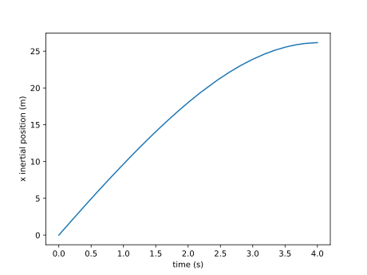
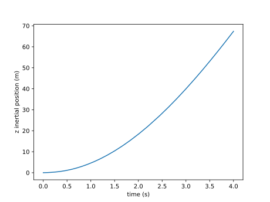
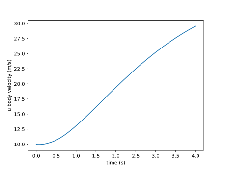
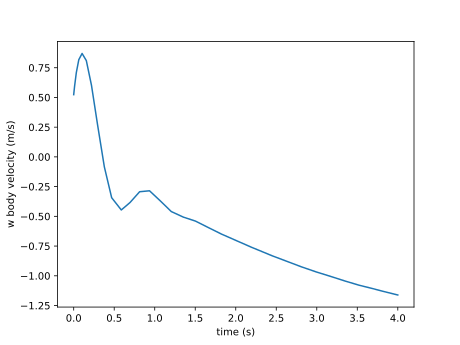

Guide
Basic Usage
First, we import the module.
using SixDOFThere are several structs we need to define. The inputs used in this example correspond to the Zagi flying wing in Appendix E of Small Unmanned Aircraft: Theory and Practice by Beard and McLain. We specify the mass properties:
SixDOF.MassProp — TypeMassProp(m, Ixx, Iyy, Izz, Ixz, Ixy, Iyz)Mass and moments of inertia in the body frame. Ixx = int(y^2 + z^2, dm) Ixz = int(xz, dm)
Most aircraft are symmetric about y and so there is a convenience method to specify only the nonzero components. MassProp(m, Ixx, Iyy, Izz, Ixz)
For this example:
m = 1.56
Ixx = 0.1147
Iyy = 0.0576
Izz = 0.1712
Ixz = 0.0015
mp = MassProp(m, Ixx, Iyy, Izz, Ixz)Next, we specify reference areas and lengths:
SixDOF.Reference — TypeReference(S, b, c)The reference area, span, and chord used in the aerodynamic computations.
Sref = 0.2589
bref = 1.4224
cref = 0.3302
ref = Reference(Sref, bref, cref)Control inputs need to be as follows:
SixDOF.Control — TypeControl(de, dr, da, df, throttle)Define the control settings: delta elevator, delta rudder, delta aileron, delta flaps, and throttle.
In this example, we don't use any control deflections. Just throttle, at 80%.
control = Control(0.0, 0.0, 0.0, 0.0, 0.8)Next, we define the atmospheric model. AtmosphereModel is an abstract type that must define the following three methods.
SixDOF.wind — Methodwind(model::AtmosphereModel, state)Compute wind velocities.
Returns
- Wi: wind velocities in inertial frame
- Wb: gust velocities in body frame (just a convenience to allow some velocities in body frame)
SixDOF.properties — Methodproperties(model::AtmosphereModel, state)Compute atmospheric density and the speed of sound.
SixDOF.gravity — Functiongravity(model::AtmosphereModel, state)Compute the local acceleration of gravity.
There is a default implementation in the module, which is the simplest possible model: one with constant properties:
SixDOF.ConstantAtmosphere — TypeConstantAtmosphere(Wi, Wb, rho, asound, g)Constant atmospheric properties.
We use that in this example:
Wi = [0.0, 0.0, 0.0]
Wb = [0.0, 0.0, 0.0]
rho = 1.2682
asound = 300.0
g = 9.81
atm = ConstantAtmosphere(Wi, Wb, rho, asound, g)Finally, we now need to define the forces and moments. We provide three abstract types for three types of forces: aerodynamics, propulsion, and gravity. In principle you could use these methods to define forces/moments for any application, but for aircraft this is a convenient separation.
All three forces take in all the same inputs, which include everything discussed so far and the state. The state is an internally used struct that contains the state of the aircraft (or other object).
SixDOF.State — TypeState(x, y, z, phi, theta, psi, u, v, w, p, q, r)State of the aircraft: positions in inertial frame, euler angles, velocities in body frame, angular velocities in body frame.
The AeroModel abstract type must define the following function:
SixDOF.aeroforces — Methodaeroforces(model::AeroModel, atm::AtmosphereModel, state::State, control::Control, mp::MassProp, ref::Reference)Compute the aerodynamic forces and moments in the body frame. return F, M
The default implementation of AeroModel is one based on stability derivatives.
SixDOF.StabilityDeriv — TypeStabilityDeriv(CL0, CLalpha, CLq, CLM, CLdf, CLde, alphas,
CD0, U0, exp_Re, e, Mcc, CDdf, CDde, CDda, CDdr,
CYbeta, CYp, CYr, CYda, CYdr, Clbeta,
Clp, Clr, Clda, Cldr,
Cm0, Cmalpha, Cmq, CmM, Cmdf, Cmde,
Cnbeta, Cnp, Cnr, Cnda, Cndr)Stability derivatives of the aircraft. Most are self explanatory if you are familiar with stability derivatives (e.g., CLalpha is dCL/dalpha or the lift curve slope). Some less familiar ones include
- M: Mach number
- alphas: the angle of attack for stall
- U0: the speed for the reference Reynolds number CD0 was computed at
- exp_Re: the coefficient in the denominator of the skin friction coefficient (0.5 laminar, 0.2 turbulent)
- e: Oswald efficiency factor
- Mcc: crest critical Mach number (when compressibility drag rise starts)
We use the following values for this example.
CL0 = 0.09167 # Zero-alpha lift
CLalpha = 3.5016 # lift curve slope
CLq = 2.8932 # Pitch rate derivative
CLM = 0.0 # Mach derivative
CLdf = 0.0 # flaps derivative
CLde = 0.2724 # elevator derivative
CLmax = 1.4 # max CL (stall)
CLmin = -0.9 # min CL (neg stall)
alphas = 20*pi/180
CD0 = 0.01631 # zero-lift drag coerff
U0 = 10.0 # velocity corresponding to Reynolds number of CD0
exp_Re = -0.2 # exponent in Reynolds number calc
e = 0.8 # Oswald efficiency
Mcc = 0.7 # crest critcal Mach number
CDdf = 0.0 # flaps
CDde = 0.3045 # elevator
CDda = 0.0 # aileron
CDdr = 0.0 # rudder
CYbeta = -0.07359 # Sideslip derivative
CYp = 0.0 # Roll rate derivative
CYr = 0.0 # Yaw rate derivative
CYda = 0.0 # Roll control (aileron) derivative
CYdr = 0.0 # Yaw control (rudder) derivative
Clbeta = -0.02854 # Sideslip derivative
Clp = -0.3209 # Roll rate derivative
Clr = 0.03066 # Yaw rate derivative
Clda = 0.1682 # Roll (aileron) control derivative
Cldr = 0.0 #Yaw (rudder) control derivative
Cm0 = -0.02338 # Zero-alpha pitch
Cmalpha = -0.5675 # Alpha derivative
Cmq = -1.3990 # Pitch rate derivative
CmM = 0.0
Cmdf = 0.0
Cmde = -0.3254 # Pitch control derivative
Cnbeta = -0.00040 # Slideslip derivative
Cnp = -0.01297 # Roll rate derivative
Cnr = -0.00434 # Yaw rate derivative
Cnda = -0.00328 # Roll (aileron) control derivative
Cndr = 0.0 # Yaw (rudder) control derivative
sd = StabilityDeriv(CL0, CLalpha, CLq, CLM, CLdf, CLde, alphas,
CD0, U0, exp_Re, e, Mcc, CDdf, CDde, CDda, CDdr,
CYbeta, CYp, CYr, CYda, CYdr,
Clbeta, Clp, Clr, Clda, Cldr,
Cm0, Cmalpha, Cmq, CmM, Cmdf, Cmde,
Cnbeta, Cnp, Cnr, Cnda, Cndr)The PropulsionModel abstract type must define the following function:
SixDOF.propulsionforces — Methodpropulsionforces(model::PropulsionModel, atm::AtmosphereModel, state::State, control::Control, mp::MassProp, ref::Reference)Compute the propulsive forces and moments in the body frame. return F, M
The default implementation of PropulsionModel is based on a first-order motor model coupled with a parameterized curve fit of propeller data. The torque for when the motor and propeller are matched is solved for and then used to compute thrust.
SixDOF.MotorPropBatteryDataFit — TypeMotorPropBatteryDataFit(CT2, CT1, CT0, CQ2, CQ1, CQ0, D, num, type,
R, Kv, i0, voltage)Inputs
- CT2, CT1, CT0: quadratic fit to propeller thrust coefficient of form: CT = CT2J2 + CT1J + CT0
- CQ2, CQ1, CQ0: quadratic fit to propeller torque coefficient of form: CQ = CQ2J2 + CQ1J + CQ0
- D: propeller diameter
- num: number of propellers
- type: CO (torques add), COUNTER (torques add but with minus sign), COCOUNTER (no torque, they cancel out)
- R: motor resistance
- Kv: motor Kv
- i0: motor no-load current
- voltage: battery voltage
This example uses data roughly corresponding to an APC thin electric 10x5
CT0 = 0.11221
CT1 = -0.13803
CT2 = -0.047394
CQ0 = 0.0062
CQ1 = 0.00314
CQ2 = -0.015729
D = 10*0.0254
num = 2
type = COCOUNTER
R = 0.5
Kv = 2500.0 * pi/30
i0 = 0.3
voltage = 8.0
propulsion = MotorPropBatteryDataFit(CT2, CT1, CT0, CQ2, CQ1, CQ0, D, num, type, R, Kv, i0, voltage)Finally, the InertialModel must implment the following function
SixDOF.gravityforces — Methodgravityforces(model::InertialModel, atm::AtmosphereModel, state::State, control::Control, mp::MassProp, ref::Reference)Compute the gravitational forces and moments in the body frame. return F, M
The default implementation ($UniformGravitationalField$) assumes that the center of mass and center of gravity are coincident and so there is no gravitational moment. The default will likely be used most of the time as that condition is true for almost all applications, except perhaps some spacecraft in high orbits where small gravitational torques may matter.
inertial = UniformGravitationalField()The main function is
SixDOF.sixdof! — Functionsixdof!(ds, s, params, time)dynamic and kinematic ODEs. Follows format used in DifferentialEquations package.
- s = x, y, z, phi, theta, psi, u, v, w, p, q, r (same order as State)
- params = control, massproperties, reference, aeromodel, propmodel, inertialmodel, atmmodel
We rarely use it directly, but rather use it in connection with an ODE solver. In this case the $DifferentialEquations$ package. We start with an initial velocity at an angle of attack and simulate for four seconds.
import DifferentialEquations
Vinf = U0
alpha = 3.0*pi/180
s0 = [0.0, 0.0, 0.0, 0.0, 0.0, 0.0, Vinf*cos(alpha), 0.0, Vinf*sin(alpha), 0.0, 0.0, 0.0]
tspan = (0.0, 4.0)
p = control, mp, ref, sd, propulsion, inertial, atm
prob = DifferentialEquations.ODEProblem(sixdof!, s0, tspan, p)
sol = DifferentialEquations.solve(prob)We can plot the results. For example the linear positions and velocities. The y-components are not plotted in this case, because they are all zero as there are no control deflections or wind that would cause lateral motion in this example.
using PyPlot;
figure()
plot(sol.t, sol[1, :])
xlabel("time (s)")
ylabel("x inertial position (m)")
figure()
plot(sol.t, sol[3, :])
xlabel("time (s)")
ylabel("z inertial position (m)")
figure()
plot(sol.t, sol[7, :])
xlabel("time (s)")
ylabel("u body velocity (m/s)")
figure()
figure()
plot(sol.t, sol[9, :])
xlabel("time (s)")
ylabel("w body velocity (m/s)");[ Info: Installing matplotlib via the Conda matplotlib package...
[ Info: Running `conda install -y matplotlib` in root environment
Collecting package metadata (current_repodata.json): ...working... done
Solving environment: ...working... done
## Package Plan ##
environment location: /home/runner/.julia/conda/3
added / updated specs:
- matplotlib
The following packages will be downloaded:
package | build
---------------------------|-----------------
cycler-0.10.0 | py37_0 13 KB
dbus-1.13.12 | h746ee38_0 611 KB
expat-2.2.6 | he6710b0_0 146 KB
fontconfig-2.13.0 | h9420a91_0 227 KB
freetype-2.9.1 | h8a8886c_1 550 KB
glib-2.63.1 | h5a9c865_0 3.4 MB
gst-plugins-base-1.14.0 | hbbd80ab_1 4.8 MB
gstreamer-1.14.0 | hb453b48_1 3.1 MB
icu-58.2 | h9c2bf20_1 10.3 MB
jpeg-9b | h024ee3a_2 214 KB
kiwisolver-1.1.0 | py37he6710b0_0 82 KB
libpng-1.6.37 | hbc83047_0 278 KB
libuuid-1.0.3 | h1bed415_2 15 KB
libxcb-1.13 | h1bed415_1 421 KB
libxml2-2.9.9 | hea5a465_1 1.6 MB
matplotlib-3.1.1 | py37h5429711_0 5.0 MB
pcre-8.43 | he6710b0_0 209 KB
pyparsing-2.4.5 | py_0 62 KB
pyqt-5.9.2 | py37h05f1152_2 4.5 MB
python-dateutil-2.8.1 | py_0 224 KB
pytz-2019.3 | py_0 231 KB
qt-5.9.7 | h5867ecd_1 68.5 MB
sip-4.19.8 | py37hf484d3e_0 274 KB
tornado-6.0.3 | py37h7b6447c_0 584 KB
------------------------------------------------------------
Total: 105.1 MB
The following NEW packages will be INSTALLED:
cycler pkgs/main/linux-64::cycler-0.10.0-py37_0
dbus pkgs/main/linux-64::dbus-1.13.12-h746ee38_0
expat pkgs/main/linux-64::expat-2.2.6-he6710b0_0
fontconfig pkgs/main/linux-64::fontconfig-2.13.0-h9420a91_0
freetype pkgs/main/linux-64::freetype-2.9.1-h8a8886c_1
glib pkgs/main/linux-64::glib-2.63.1-h5a9c865_0
gst-plugins-base pkgs/main/linux-64::gst-plugins-base-1.14.0-hbbd80ab_1
gstreamer pkgs/main/linux-64::gstreamer-1.14.0-hb453b48_1
icu pkgs/main/linux-64::icu-58.2-h9c2bf20_1
jpeg pkgs/main/linux-64::jpeg-9b-h024ee3a_2
kiwisolver pkgs/main/linux-64::kiwisolver-1.1.0-py37he6710b0_0
libpng pkgs/main/linux-64::libpng-1.6.37-hbc83047_0
libuuid pkgs/main/linux-64::libuuid-1.0.3-h1bed415_2
libxcb pkgs/main/linux-64::libxcb-1.13-h1bed415_1
libxml2 pkgs/main/linux-64::libxml2-2.9.9-hea5a465_1
matplotlib pkgs/main/linux-64::matplotlib-3.1.1-py37h5429711_0
pcre pkgs/main/linux-64::pcre-8.43-he6710b0_0
pyparsing pkgs/main/noarch::pyparsing-2.4.5-py_0
pyqt pkgs/main/linux-64::pyqt-5.9.2-py37h05f1152_2
python-dateutil pkgs/main/noarch::python-dateutil-2.8.1-py_0
pytz pkgs/main/noarch::pytz-2019.3-py_0
qt pkgs/main/linux-64::qt-5.9.7-h5867ecd_1
sip pkgs/main/linux-64::sip-4.19.8-py37hf484d3e_0
tornado pkgs/main/linux-64::tornado-6.0.3-py37h7b6447c_0
Downloading and Extracting Packages
pyparsing-2.4.5 | 62 KB | | 0%
pyparsing-2.4.5 | 62 KB | ########## | 100%
libuuid-1.0.3 | 15 KB | | 0%
libuuid-1.0.3 | 15 KB | ########## | 100%
libxml2-2.9.9 | 1.6 MB | | 0%
libxml2-2.9.9 | 1.6 MB | ########## | 100%
fontconfig-2.13.0 | 227 KB | | 0%
fontconfig-2.13.0 | 227 KB | ########## | 100%
sip-4.19.8 | 274 KB | | 0%
sip-4.19.8 | 274 KB | ########## | 100%
python-dateutil-2.8. | 224 KB | | 0%
python-dateutil-2.8. | 224 KB | ########## | 100%
matplotlib-3.1.1 | 5.0 MB | | 0%
matplotlib-3.1.1 | 5.0 MB | ########## | 100%
glib-2.63.1 | 3.4 MB | | 0%
glib-2.63.1 | 3.4 MB | ########## | 100%
gst-plugins-base-1.1 | 4.8 MB | | 0%
gst-plugins-base-1.1 | 4.8 MB | ########## | 100%
gstreamer-1.14.0 | 3.1 MB | | 0%
gstreamer-1.14.0 | 3.1 MB | ########## | 100%
jpeg-9b | 214 KB | | 0%
jpeg-9b | 214 KB | ########## | 100%
libxcb-1.13 | 421 KB | | 0%
libxcb-1.13 | 421 KB | ########## | 100%
expat-2.2.6 | 146 KB | | 0%
expat-2.2.6 | 146 KB | ########## | 100%
dbus-1.13.12 | 611 KB | | 0%
dbus-1.13.12 | 611 KB | ########## | 100%
cycler-0.10.0 | 13 KB | | 0%
cycler-0.10.0 | 13 KB | ########## | 100%
kiwisolver-1.1.0 | 82 KB | | 0%
kiwisolver-1.1.0 | 82 KB | ########## | 100%
libpng-1.6.37 | 278 KB | | 0%
libpng-1.6.37 | 278 KB | ########## | 100%
tornado-6.0.3 | 584 KB | | 0%
tornado-6.0.3 | 584 KB | ########## | 100%
pcre-8.43 | 209 KB | | 0%
pcre-8.43 | 209 KB | ########## | 100%
pyqt-5.9.2 | 4.5 MB | | 0%
pyqt-5.9.2 | 4.5 MB | ########## | 100%
icu-58.2 | 10.3 MB | | 0%
icu-58.2 | 10.3 MB | #######6 | 76%
icu-58.2 | 10.3 MB | ########## | 100%
freetype-2.9.1 | 550 KB | | 0%
freetype-2.9.1 | 550 KB | ########## | 100%
pytz-2019.3 | 231 KB | | 0%
pytz-2019.3 | 231 KB | ########## | 100%
qt-5.9.7 | 68.5 MB | | 0%
qt-5.9.7 | 68.5 MB | # | 11%
qt-5.9.7 | 68.5 MB | ##3 | 24%
qt-5.9.7 | 68.5 MB | ###7 | 38%
qt-5.9.7 | 68.5 MB | #####2 | 53%
qt-5.9.7 | 68.5 MB | ######7 | 67%
qt-5.9.7 | 68.5 MB | ########1 | 81%
qt-5.9.7 | 68.5 MB | #########3 | 94%
qt-5.9.7 | 68.5 MB | ########## | 100%
Preparing transaction: ...working... done
Verifying transaction: ...working... done
Executing transaction: ...working... done   
Additional Helper Functions
A few other helper functions exist. These first three create rotation matrices from one coordinate system to the body frame. All of these rotation matrices are orthogonal so the inverse of the matrix is just its transpose.
SixDOF.inertialtobody — Functioninertialtobody(state)Construct a rotation matrix from inertial frame to body frame
The assumed order of rotation is
- psi radians about the z axis,
- theta radians about the y axis,
- phi radians about the x axis.
This is an orthogonal transformation so its inverse is its transpose.
SixDOF.windtobody — Functionwindtobody(alpha, beta)Rotation matrix from wind frame to body frame.
- alpha: angle of attack
- beta: sideslip angle
SixDOF.stabilitytobody — Functionstabilitytobody(alpha, beta)Rotation matrix from stability frame to body frame.
- alpha: angle of attack
Another function extracts airspeed, angle of attack, and sideslip from the body motion and wind.
SixDOF.windaxes — Functionwindaxes(atm::AtmosphereModel, state)Compute relative velocity in wind axes (airspeed, aoa, sideslip)